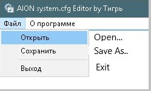

system.cfg - The config value master doc!
Posted: Thu Jul 27, 2017 9:04 pm

I remember always having the problem of googling what these config values mean and coming across 12332 different answers. I took the liberty of finding the CryEngine documentation of the engine version used to build Aion. If you would like to add or edit any values and don't know whats what; here's the master link:
CryEngine AutoGenConfig Documentation
If you can't find the value, it's non-existant - i.e DELETE!
This is the best FPS config I managed to create, suggestions always welcome!
I remember always having the problem of googling what these config values mean and coming across 12332 different answers. I took the liberty of finding the CryEngine documentation of the engine version used to build Aion. If you would like to add or edit any values and don't know whats what; here's the master link:
CryEngine AutoGenConfig Documentation
If you can't find the value, it's non-existant - i.e DELETE!
This is the best FPS config I managed to create, suggestions always welcome!
Code: Select all
con_restricted = "0"
sys_spec_GameEffects = "0"
sys_spec_ObjectDetail = "0"
sys_spec_Particles = "0"
sys_spec_Physics = "0"
sys_spec_PostProcessing = "0"
sys_spec_Shading = "0"
sys_spec_Shadows = "0"
sys_spec_Sound = "0"
sys_spec_Texture = "0"
sys_spec_TextureResolution = "0"
sys_spec_VolumetricEffects = "0"
sys_spec_light = "0"
sys_spec_texture = "0"
sys_spec_sound = "0"
sys_spec_Quality = "0"
ac_animErrorClamp = "0"
ac_clampTimeAnimation = "0"
ac_clampTimeEntity = "0"
ac_disableFancyTransitions = "1"
ca_AnimIFrame = "30"
ca_AnimWarningLevel = "0"
ca_AnimationDeferredLoad = "1"
ca_AnimationUnloadMaxPerFrame = "0"
ca_AnimationUnloadCheckPerFrame = "0"
ca_AnimationUnloadDelay = "0"
ca_ClothMode = "0"
ca_DrawBones = "0"
ca_EnableCCG = "0"
ca_EnableCharacterShadowVolume = "0"
ca_EnableCubicBlending = "0"
ca_EnableDecals = "0"
ca_EnableLightUpdate = "0"
ca_EnableTangentSkinning = "0"
ca_HairAnim = "0"
ca_KeepModels = "1"
ca_LodBias = "5"
ca_MemoryDefragEnabled = "0"
ca_NoDrawShadowVolumes = "1"
ca_NoMorph = "1"
ca_NormalizeBases = "0"
ca_PrecacheAnimationSets = "1"
ca_SSEEnable = "1"
ca_SafeReskin = "0"
ca_UseAnimationsCache = "1"
ca_UseDecals = "0"
ca_UseFacialAnimation = "0"
ca_UsePhysics = "0"
ca_ambient_light_range = 1"
ca_disable_thread = "0"
ca_lod_force = "1"
ca_lod_ratio = "0"
ca_thread = "1"
ca_UseDecals = "0"
d3d9_AllowSoftware = "0"
d3d9_PSforce11 = "0"
d3d9_TripleBuffering = "0"
e_CGF_Load_Lods = "1"
e_CharLodMin = "200"
e_CullVegActivation = "0"
e_clouds = "0"
e_Decals = "0"
e_DecalsAllowGameDecals = "0"
e_DecalsLifeTimeScale = "0"
e_Dissolve = "0"
e_DynamicLights = "0"
e_GI = "0"
e_GsmCache = "0"
e_GsmLodsNum = "1"
e_ParticlesMaxScreenFill = "16"
e_HwOcclusionCullingObjects = "0"
e_HwOcclusionCullingWater = "0"
e_LodCompMaxSize = "1"
e_LodMin = "1"
e_LodMinTtris = "1"
e_LodRatio = "0.2"
e_LodsForceUse = "1"
e_MaxDistanceTerrain = "55"
e_MaxViewDistSpecLerp = "0"
e_ObjQuality = "0"
e_OcclusionCullingViewDistRatio = "0"
e_ParticlesDiffCM = "0"
e_ParticlesForceSoftParticles = "0"
e_ParticlesGI = "0"
e_ParticlesObjectCollisions = "0"
e_ParticlesPreload = "1"
e_ParticlesQuality = "0"
e_ParticlesShadows = "0"
e_ParticlesThread = "1"
e_ParticlesLod = "0.2"
e_particles_lod = "0.2"
e_PrecacheLevel = "1"
e_cbuffer = "2"
e_PreloadMaterials = "1"
e_PrepareDeformableObjectsAtLoadTime = "1"
e_ProcVegetationMaxSectorsInCache = "64"
e_Recursion = 0
e_Render = "1"
e_Shadow_Maps = "0"
e_Shadows = "0"
e_SkyBox = "1"
e_SkyQuality = "0"
e_SkyType = "0"
e_StatObjBufferRenderTasks = "0"
e_StatObjPreload = "1"
e_TerrainAo = "0"
e_TerrainLodRatio = "1"
e_TerrainOcclusionCullingMaxDist = "0"
e_TerrainTextureLodRatio = "0"
e_Vegetation = "1"
e_VegetationAlphaBlend = "0"
e_VegetationMinSize = "1"
e_VegetationSpritesDistanceRatio = "0"
e_VegetationUseTerrainColor = "1"
e_ViewDistRatio = "0"
e_ViewDistRatioCustom = "0"
e_ViewDistRatioDetail = "0"
e_ViewDistRatioLights = "0"
e_ViewDistRatioVegetation = "0"
e_beach = "0"
e_cgf_load_lods = "1"
e_clouds = "0"
e_ent_view_dist_ratio = "0.400000"
e_flocks = "0"
e_fog = "0"
e_HwOcclusionCullingObjects = "0"
e_HwOcclusionCullingparticles = "0"
e_HwOcclusionCullingVegetation = "0"
e_HwOcclusionCullingWater = "0"
e_light_maps = "1"
e_light_maps_quality = "0"
e_lods = "1"
e_maxdistance_ratio_entities = "0.500000"
e_maxdistance_terrain = "0"
e_obj_view_dist_ratio = "58"
e_objects_fade_on_distance = "0"
e_optimized_render_object = "0"
e_particles_fullfx = "0"
e_particles_max_count = "296"
e_particles_thread = "1"
e_proc_vegetation = "0"
e_recursion_occlusion_culling = "0"
e_shadow_spots = "0"
e_skip_terrain_culling = "1"
e_sky_box = "1"
e_stencil_shadows = "0"
e_streamCgf = "0"
e_sun = "0"
e_TerrainTextureLodRatioBias = "3"
e_TerrainTextureLodRatio = "0"
e_use_backup_shader = "0"
e_VegetationBending = "0"
e_VegetationMinSize = "1"
e_vegetation_min_size = "1"
e_VegetationSprites = "1"
e_VegetationSpritesDistanceCustomRatioMin = "1"
e_VegetationSpritesDistanceatioMin = "1"
e_vegetation_static_instancing = "1"
e_vegetation_update_shadow_every_frame = "0"
e_vegetation_wind = "0"
e_GsmLodsNum = "1"
e_view_dist_ratio = "0.100000"
e_view_dist_ratio_detail = "0"
e_view_dist_ratio_vegetation = "0.100000"
e_view_dist_vegetation = "0"
e_water_ocean_soft_particles = "0"
e_water_render_distance = "0"
e_weather_fx_enable = "0"
es_DebrisLifetimeScale = "1.0"
es_UpdateInvisibleCharacter = "0"
g_MaxFPS = "-1"
g_NoWarFog = "1"
g_blade_fx = "0"
g_blade_time = "0.0"
g_camMax = "22"
g_cam_rot_ratio = "0"
g_cfg_version = "7"
g_cfg_video_BACKGROUND = "0"
g_cfg_video_EFFECT = "0"
g_cfg_video_ENTITY_DIST = "0"
g_cfg_video_ENV_TEX = "0"
g_cfg_video_FSAA = "0"
g_cfg_video_GENERAL = "-2"
g_cfg_video_GLARE = "0"
g_cfg_video_GLOW = "0"
g_cfg_video_MODEL_CACHE = "1"
g_cfg_video_MRT_BACKGROUND = "0"
g_cfg_video_MRT_BUMP = "0"
g_cfg_video_MRT_CAMERA = "0"
g_cfg_video_MRT_DOF = "0"
g_cfg_video_MRT_EFFECT = "0"
g_cfg_video_MRT_ENTITY_DIST = "0"
g_cfg_video_MRT_ENV_TEX = "0"
g_cfg_video_MRT_FSAA = "0"
g_cfg_video_MRT_GENERAL = "0"
g_cfg_video_MRT_GLARE = "0"
g_cfg_video_MRT_GLOW = "0"
g_cfg_video_MRT_LOWEST = "0"
g_cfg_video_MRT_MODEL_CACHE = "0"
g_cfg_video_MRT_SHADER = "0"
g_cfg_video_MRT_SHADOW = "0"
g_cfg_video_MRT_SKILLFX = "0"
g_cfg_video_MRT_SUNSHAFT = "0"
g_cfg_video_MRT_TERRAIN_DIST = "0"
g_cfg_video_MRT_TEXTURE = "0"
g_cfg_video_MRT_WATER = "0"
g_cfg_video_MRT_WEATHERLAYER = "0"
g_cfg_video_SHADER = "0"
g_cfg_video_SHADOW = "0"
g_cfg_video_SKILLFX = "0"
g_cfg_video_TERRAIN_DIST = "0"
g_cfg_video_TEXTURE = "0"
g_cfg_video_WATER = "0"
g_cfg_video_screen_res = "1"
g_chainSkillChangeCooltimeDelay = "0.000"
g_chainSkillIndicateDelay = "0.000"
g_chatlog = "0"
g_client_var = "0"
g_enableSkillVoice = "0"
g_fxLevel = "3"
g_loadSlotState = "3"
g_minFOV = "60"
g_radialBlur = "0"
g_save_preset = "1"
g_showFPS = "1"
g_showUIActionMsg = "0"
g_show_breath = "0"
g_uiContour = "0"
g_uiFX = "0"
g_ui_stillview = "1"
g_muteMyPet = "1"
g_openSpecialServerList = "0"
g_playerprofile = "custom"
gpu_particle_physics = "1"
i_direct_input = "1"
i_mouse_accel = "0"
i_mouse_inertia = "0"
i_mouse_smooth = "0"
i_particleeffects = "0"
i_precache = "1"
i_dinputkeys = "1"
i_direct_input = "1"
i_rejecteffects = "0"
i_iceeffects = "0"
r_AntialiasingMode = "0"
r_Beams = "0"
r_Brightness = "0.457455"
r_CharLodMin = "1"
r_CharacterLODBias = "3"
r_Character_LOD_Bias = "3"
r_ChromaticAberration = "0"
r_ColorBits = "16"
r_ColorGrading = "0"
r_checkSunVis = "0"
r_DeferredShadingAmbientLights = "0"
r_DepthBits = "8"
r_DepthOfField = "0"
r_Detail = "0"
r_DetailDistance = "0"
r_DetailDistance = "0.000000"
r_DetailNumLayers = "0"
r_DetailTextures = "0"
r_DisableSfx = "1"
r_DrawNearFOV = "60"
r_DrawNearZRange = "0.08"
r_DynTexAtlasCloudsMaxSize = "2"
r_DynTexAtlasSpritesMaxSize = "2"
r_EnhanceImage = "0"
r_EnvCMResolution = "3"
r_EnvCMupdateInterval = "1.0"
r_EnvTexResolution = "3"
r_EnvTexUpdateInterval = "1.0"
r_FSAA_samples = "0"
r_Flares = "0"
r_FlaresTessellationRatio = "0"
r_FullscreenPreemption = "1"
r_GeomInstancing = "0"
r_HDRBloomRatio = "0"
r_HDRBrightLevel = "0"
r_HDRGrainAmount = "0"
r_LodBias = "3"
r_MSAA = "0"
r_MeshPrecache = "1"
r_MotionBlur = "0"
r_MultiGPU = "2"
r_MultiThreaded = "1"
r_NoDrawNear = "1"
r_UseParticlesHalfRes = "1"
r_ParticlesHalfResBlendMode = "1"
r_ParticlesTessellation = "0"
r_TexturesStreamPoolSize = "0"
r_ParticlesMotionBlur = "0"
r_PostAA = "0"
r_PostAAEdgeFilter = "0"
r_PostProcessEffects = "0"
r_PostProcessEffectsGameFx = "0"
r_PostProcessFilters = "0"
r_PostProcessGameFx = "0"
r_ProcFlares = "0"
r_PseudoFullscreen = "0"
r_Quality_BumpMapping = "0"
r_SSReflections = "0"
r_ShaderModel = "0"
r_ShadersPrecache = "1"
r_ShadowBlur = "0"
r_ShadowJittering = "0"
r_Sharpening = "0"
r_StencilBits = "8"
r_SyncVBuf = "0"
r_DynTexMaxSize = "64"
r_TexMaxSize = "64"
r_textureMode = "GL_LINEAR_MIPMAP_NEAREST"
r_TexBumpResolution = "3"
r_TexLMResolution = "3"
r_TexMaxAnisotropy = "0"
r_TexResolution = "0.1"
r_TexSkyResolution = "3"
r_TextureBits = "8"
r_TexturesStreamPoolSize = "0"
r_TexturesStreamingSkipMips = "1"
r_TexturesWarmup = "0"
r_UseParticlesHalfResForce = "1"
r_UseParticlesMerging = "0"
r_UseParticlesRefraction = "0"
r_UseSoftParticles = "0"
r_VSync = "0"
r_VegetationSpritesTexRes = "3"
r_Vegetation_PerpixelLight = "0"
r_WaterCaustics = "0"
r_WaterGodRays = "0"
r_WaterReflections = "0"
r_WaterReflections_MaxViewDist = "0.000000"
r_WaterUpdateDistance = "0"
r_fogShadowsWater = "0"
r_fx_draw = "0"
r_mrt_initdetect = "1"
r_rain = "0"
r_ssao = "0"
r_ssdo = "0"
r_sunshafts = "0"
r_TextureStreaming = "0"
p_lightrange = "16"
s_FormatSampleRate = "44100"
s_MasterVolume = "0.750000"
s_MusicIgnoreGameStatus = "1"
s_MusicMute = "1"
s_MusicPlayOnce = "1"
s_NCPing_Enable = "1"
s_HRTFEnable = "0"
s_BatterySave_Enable = "0"
s_PriorityThreshold = "0"
s_SFXVolume_COMMENT_GOSSIP = "1.000000"
s_SFXVolume_COMMENT_NPC = "0.377564"
s_SFXVolume_COMMENT_QUEST = "1.000000"
s_SFXVolume_COMMENT_SYSTEM = "0.600000"
s_SFXVolume_ENV = "0.350000"
s_SFXVolume_FX = "0.188782"
s_SFXVolume_UI = "0.232347"
sys_DeactivateConsole = "0"
sys_job_system_enable = "0"
sys_SSInfo = "0"
sys_StreamCompressionMask = "0"
sys_WER = "0"
sys_maxFPS = "-1"
sys_FixedFrame = "0"
sys_LowSpecPak = "1"
sys_physics_CPU = "3"
sys_preload = "1"
sys_spec_VolumetricEffects = "0"
sys_StreamCallbackTimeBudget = "40000"
sys_StreamCompressionMask="0"
sys_warnings = "0"
sys_AdaptiveCharLOD = "1.000000"
sys_LowSpecPak = "1"
sys_skiponlowspec = "1"